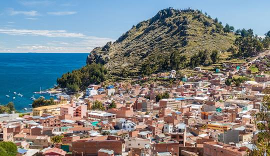
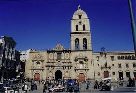
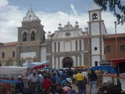
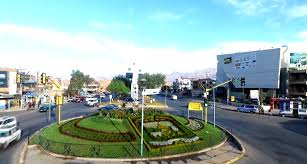
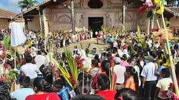

En Copacabana es un destino muy concurrido durante Semana Santa. Muchas personas viajan hasta allí para reflexionar y vivir un momento espiritual. Uno de los puntos más representativos es el Calvario, un cerro que se recorre en subida y en cuya cima se encuentran las doce cruces, símbolo del Vía Crucis. Este recorrido es considerado por muchos como un acto de redención y recogimiento espiritual.

La Iglesia de San Francisco ubicada en el centro histórico de La Paz, Bolivia, es uno de los templos más emblemáticos del país. Su arquitectura barroca mestiza y su historia colonial la convierten en un importante atractivo cultural y religioso. Durante la Semana Santa, la iglesia se convierte en un punto clave para las celebraciones. Se llevan a cabo misas solemnes, procesiones, y actos litúrgicos que convocan a cientos de fieles que acuden para reflexionar, acompañar el Vía Crucis y vivir la pasión de Cristo en comunidad.

En Tarata es un Pueblo colonial que conserva tradiciones religiosas muy vivas. Se hacen procesiones con imágenes antiguas, viacrucis por las calles empedradas, y se acompaña al Santo Sepulcro con cánticos y velas, en un ambiente muy devoto

En Quillacollo esFamoso por la devoción a la Virgen de Urkupiña, en Semana Santa se realizan viacrucis y actos litúrgicos desde el templo principal. Hay caminatas espirituales y participación activa de jóvenes y familias.

En Chiquitania en lugares como San Javier, Concepción y San Ignacio, se viven celebraciones únicas con música barroca misional y procesiones que mezclan tradición indígena con la herencia jesuítica. Son verdaderos espectáculos de fe y cultura.
